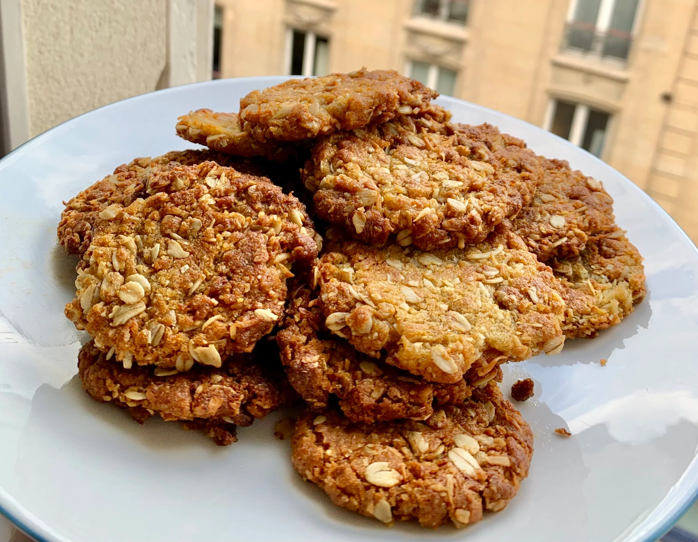

Anzac Biscuits
original recipe mentions that you can double the golden syrup for a chewier biscuit. I have ...

Ingredients
125 grams (4 1/2 ounces) unsalted butter
25 grams (1 tablespoon) golden syrup
210 grams (1 cup + 2 tablespoons) light or dark brown sugar (the original recipe just says sugarso you can
use whatever you have to hand)
100 grams (1 cup) old-fashioned rolled oats
65 grams (1 cup) unsweetened desiccated coconut
Australia’s favourite biscuit! We love them for their buttery caramel flavour, how crunchy they are, that it’s a
forgiving recipe and the history – this is a biscuit that Aussies make to commemorate ANZAC Day.
“ANZAC” stands for Australian and New Zealand Army Corps. And ANZAC Day – 25 April 1915 – is Australia’s most
important national occasion each year, marking the anniversary of the first major military action fought by
Australian and New Zealand forces during the First World War during which we suffered heavy casualties.
It is said that the wives of soldiers came up with the original Anzac Biscuits using ingredients such that the
biscuits stayed fresh for the weeks it took to reach the soldiers overseas. I’m told that the original Anzac
biscuits were as hard as a rock, so hard in fact that some soldiers would grind them up and use them as porridge